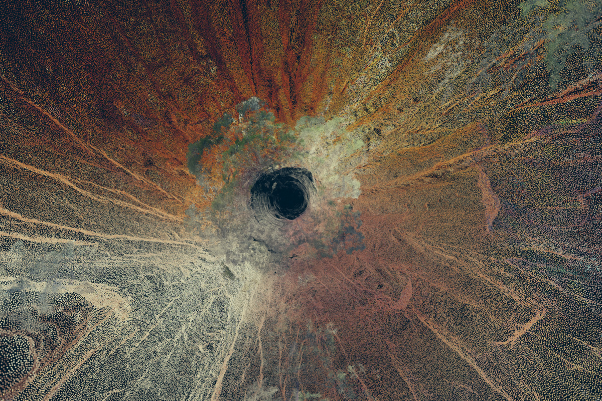

Enter the Writers
Smart Illusion
By: Marloeke van der Vlugt
In an infomercial1 that I came across while browsing around YouTube, an enthusiastic, bespectacled inventor explained a new innovation. The sleek, shiny Smart Pipe, easy to install in your toilet, will catch your stool and analyse it on the spot. This allows germs and bacteria to be detected at a very early stage. You receive tips and tricks via your smartphone to keep your intestinal flora in top shape. Potential disorders are tweeted to the relevant authorities so that they can respond in a timely manner and prevent related undesirable behavior.
In order to match the right person to the right excrement, the Smart Pipe takes an anal photo during the first use. The collected and stored information can then be shared or sold. According to the infomercial, many companies are interested in the metadata. For example, how do your bowel movements relate to your coffee machine or to the (too tight?) clothing you wear? With this information, restaurants can offer you tailor made dinners that cater perfectly to your particular constitution. All information will be secured on a server and maintained by Smart Pipe.
The Smart Pipe is of course a parody, but it is easy enough to fall for it. There are currently so many self-regulating, networked but often nonsensical products2 brought on the market that the Smart Pipe seems feasible.
I was struck by the video, as it brings together various aspects of how we relate to interactive devices and the Internet of Things (IoT). The IoT is a collective term for objects, spaces and devices that are connected via a digital network and can independently receive, collect and send data. The Smart Pipe video by Cartoon Network is a striking example of our complex relationship with objects that are 'brought to life' with the help of technology.
Better, easier and more efficient?
The arresting advertising campaigns and the attractive aesthetics of the smart thermostat and the self-monitoring alarm system are tempting purchases: we didn't know that they existed, but now that we know we want to own them. The hip neighbour – an early adopter – enthusiastically tells the same convincing story: the devices will make our lives better, easier and more efficient.
At the same time, these objects evoke something else: the uncertainty of the unknown. What exactly are we bringing home? We fear that the objects are unpredictable or uncontrollable, and worry about the consequences for our privacy. The devices fascinate us, we find them attractive and exciting, but deep down we also feel distaste or even disgust for these 'living objects'.
The Smart Pipe video immediate gives rise to these mixed feelings. Although we are revolted by the idea of a photographing toilet bowl, the video simultaneously tries to tempt us with 'futuristic' promises and we may be enticed by the intimate secrets held by this intelligent plumbing system. Smart Pipe is so extreme that our reactions, veering between attraction and repulsion, will also be extreme.
Smart seduction
The communication between 'smart object' and consumer, from the moment of purchase until the actual use, is focused on seduction. However, the practical interaction with the technological object often seems difficult to understand, and may result in a diffuse and unequal relationship. To what extent do these digitally-networked objects actually listen to us? Or do they bypass us? Whereas a good conversation is interactive and shares a common goal, the response capacity of these devices are limited and the goal is often commercial. Although the devices record our needs, the programmed output is fixed and difficult to change..
Take for example a 'smart' coffee machine that brews coffee at a specific time. The timing is linked to the location of your iPhone, so when you approach home the machine begins to brew. But what if you don't feel like drinking coffee when you come home? Do you drink it anyhow? After all, it's ready! And what about when the coffee machine keeps tweeting you that you've run out of coffee beans? Do you immediately run to the store? Or do you let the machine order online for you? .
There are numerous examples of when the system initially seems to communicate with you, but over time ends up determining your behaviour. In other words, what is provided is the semblance of equivalent interactivity, camouflaged in an attractive form. How this 'temptation' process works with the passage of time is often hard to fathom: suddenly you seem able only to respond and you have lost control. The coffee machine keeps ordering coffee beans, and this setting can't be changed..
Such a process can lead to frustration and feelings of powerlessness.(3) I experience these feelings when I have the idea that I'm not being heard, and can't exert any influence to change that. When I feel like my life is being lived, rather than that I'm living it. When too little attention is paid to me as a person, and too much to me as a part in a digital network.
The ability to analyse the origin of these feelings is one of the reasons I make interactive, technology-based art. I challenge myself to take the time to explore how I relate to the digitally-networked world around me. I observe myself, and step by step unravel my (physical) interaction so that I can experience it consciously and understand what is happening.
For a deeper exploration of the concept of interactivity in relation to the IoT, I'll take a closer look at the Eye Catcher installation created by Lin Zhang and Xie Ran in the Interactive Architecture Lab in London. This interactive technological installation can be seen this year at Cinekid's MediaLab.
Each time a unique artwork
This is just one side of the coin: of course, the viewer reacts first to the original state of the work and tries to change something with his or her behaviour.
But as far as I am concerned a work is only interactive if the resulting change then again challenges the spectator's behaviour, and so on and so forth. A dialogue arises between the viewer and the artwork that transforms the viewer into a participant, performer or even co-creator. Further reasoning implies that a unique artwork will continuously be created with real interactivity: after all, each person is different, will react in his or her own way and provide other input.
Let's look at the Eye Catcher installation. This is composed of a simple photo frame mounted on a white wall. There is no image; the frame seems to be empty. When the visitor walks by, the frame slides across the wall to follow the visitor.
When the visitor stops and looks, the frame positions itself at eye level in front of his or her face. The dark fluid hidden at the bottom of the frame clusters together and two black eyes emerge. A hidden video camera registers the facial expression of the visitor. The magnetic black liquid reacts by drawing eyes that express basic emotions. Imagine thoughtfully squinted eyes, piercing bright eyes or a happy, sparkling gaze resulting in eyes that look like they are exploding.
Is this work interactive? When we apply my previous definition, the answer is yes. The frame moves with the visitor, and the liquid responds to his or her facial expression. The visitor then moves differently in order to make the frame shift and let the liquid form to display different expressions. The number of emotions the magnetic fluid can express is limited. Still, the result will always differ, as each visitor explores his or her own unique series of interactive possibilities. Thus a different story is visually composed over and over again, creating a unique presentation.
An interactive work of art is therefore a semi-finished project: participants are needed in order to 'finish' the work.4 There are however degrees of interactivity. On the one hand, there are works in which the limits of the interactivity are clearly indicated, such as with the Eye Catcher. The interaction is simply the way to communicate with the work. On the other hand are installations where the possibilities appear endless and unpredictable: for example installations based on certain computer algorithms that can evolve ad infinitum.
But no matter what degree of interactivity they possess, these works require a certain attitude from the public: something or someone must take action - and invest time – in order to experience the overall result of the intended artwork.
Mirror
Here also lies the crux: an interactive work reflects our own actions, our decisions and their consequences. Indeed, interactive technology functions as a mirror that reflects not only myself as participant but also takes my actions as input to modify and react to.5 The interaction thus says something about ourselves in relation to our environment and allows us to experience this relationship.
What does the Eye Catcher reflect to us? In this work, the limits of interaction are quickly apparent. Communication works only within the predefined technological framework: when the viewer moves, the frame moves with him or her. If the viewer looks, the frame shifts to eye level. The frame thus requires very precise actions from the viewer; otherwise it does nothing. And the spectator does exactly as requested; otherwise he or she does not see the installation in full action.
Next, the spectator influences the magnetic fluid, but the possibilities here are also limited. The shape of the liquid is actually the result of a preprogrammed facial recognition system that determines which emotions the viewer exhibits based on an average. The system thus determines whether someone is angry or happy, and reacts with a predefined 'answer'.
The viewer is hereby voluntarily restricted to become part of the homogeneous, uniform group for which the system is designed. And thus the viewer - unconsciously – limits his or her own unique and physical communication possibilities to the options put forth by the computer.. Remarkably, despite the Eye Catcher's limited capacity for interaction it still feels like you are communicating with the frame in a transparent and equitable manner. But, as with the IoT, this is not true. Something else happens during the interaction that allows us to feel connected with the object..
For mutual benefit
Now what exactly is the appeal of this installation? It is no more than a square brown frame, a white background and a simple drawing of two eyes. But the object exhibits behaviour, and this evokes a strong emotional response from the viewer. The creators of the Eye Catcher talk about the experience of an 'uncanny' feeling when an object seems to be alive although we know that it is not. This confusion leads to the feeling that 'real' contact and a connection with the object has been made.
The Internet of Things also works in this way. Smart objects sell themselves as attractive systems that will take over certain actions and tasks in equal communication with us. They appear to want to co-operate with us for our 'mutual benefit', as with the Smart Pipe.
And why do we believe this? As with the Eye Catcher, we are attracted to these devices because they appeal to human communication, to our bodies and to our senses: Siri talks to you, Google Car seems to wink and opens the door for you. The Smart Pipe shows our hidden innards – our bowels – to ourselves and the outside world.
A'living' object such as the Smart Pipe crosses a line and becomes a taboo. It comes too close, and that is why we find such objects exciting. Moreover, living objects fit into the category described by French philosopher Julie Kristeva as 'abject'.6Her theory can help to clarify our fascination with this type of object.
Kristeva suggests that as we grow up, we learn that the elements forming the boundary between our bodies and the outside world – such as the eyes, mouth, anus, genitals and associated bodily fluids – are 'indecent' or 'disgusting'. According to her theory, the rejection of these 'abject' elements, which we find simultaneously attractive and repulsive, is part of becoming an adult.
So we hide our tears, keep our saliva in our mouth, close the toilet door, or urinate behind a tree. And as a consequence of this rejection, we experience loss or nostalgia for the rest of our lives: we (un)consciously still long to overstep the imposed boundaries and rules, disrupting the system and the order.7
When we are confronted with an object that exhibits human behaviour, it appears that we project our desire for the abject upon the object.
And this desire is fuelled when the object displays some abject elements, such as orifices or juices. This is the case with both Smart Pipe (showing excrement) and Eye Catcher (communicating via fake eyes with our eyes and facial expressions). This makes them attractive and fascinating.
At the same time, these objects invoke resistance by confronting us with the abject: that which cannot be shown (our innards) and that which is not supposed to be alive (an object). In order to explore this ambivalent and unacceptable feeling, we let ourselves be seduced. We want to experience the taboo – what is not possible, what is not allowed, what must remain hidden – with goosebumps of disgust and delight.
Uncanny valley
And what about the aesthetics of smart objects? Must the objects have our physical characteristics to enable this projection? To what extent can the shape of the object can be abstracted and still be experienced as alive?
In 1970, Dr. Masahiro Mori, a professor of engineering science at the University of Tokyo, studied the following question: when a robot looks increasingly human-like, does our affinity with it grow? What he found was that we do not accept a robot that appears too realistic. When the robot looks too much like us, we reject it.
He called this result 'bukimi no tani', which was later translated as 'the uncanny valley'. The translator probably chose the word 'uncanny' ('bukimi' can also mean 'strange' or ‘creepy’) as it resonates with Sigmund Freud's 1919 essay entitled Das Unheimliche. This essay was translated in 1960 as The Uncanny.
'Unheimlich' literally means 'homeless'. Freud described 'Das Unheimliche' as an ancient and elemental sense of fear that is inseparable from us – as humans – and thus also evokes a certain recognition.8 The term therefore seems to overlap with Kristeva's abject,9 although the feelings of attraction and recognition are lost and directly replaced by rejection (such as with the human robot). The precarious balance between attraction and repulsion turns into the latter. Fear also plays a role: a familiar inanimate thing can become too alive and too real, expelling us from our home.10
Designers thus ensure that technological objects avoid forms that are too human. But devices must cohere to the contemporary ideal of beauty. That is not too difficult, as the current human ideal of beauty seems in fact to be inspired by machines. A flawless body and a high level of controllability are required. The skin should no longer display its natural 'hairy' state. As a result, we shave from head to toe in order to be as smooth and shiny as a machine. The media depicts the ideal man with a 'hard body': imprisoned in an unnatural solid shield as if the skin is made of plastic or metal.11
Objects thus have a shiny, smooth surface and a tight but 'sensual' form. This aesthetic is immediately recognisable in the sleek Smart Pipe and other commercial devices like smart thermostats.12 But the Eye Catcher also plays with these features: the eyes are reduced to simple but expressive lines, and the frame hangs on a pristine white wall.
Practise makes perfect
As previously described, there are various facets to the allure of a 'living technological object'. To see through and understand this attraction, we need opportunities to 'practice' interacting with it. I see an important role for interactive technological art here; the genre of artwork that (re)presents the relationship between technology, objects, spaces and the human body and offers the possibility to zoom in on, experience and then analyse the interaction that takes place
These artworks give people the opportunity to explore how the complex relationship with the outside digitally connected world takes shape. Of course this only works when the experience is translated to the daily environment, such as the internet-connected-house.13 The Eye Catcher's frame on the wall appears to stimulate this by referring directly to one's own cozy home.
So: allow the shining, magnetic eyes of the Eye Catcher to draw you in. Then take the time to 'look back' at the eyes: walk by again, change your expression, test all of the possibilities and seek the limits of the interaction. Experience how this makes you feel.
During the Cinekid Festival you can look behind the smooth white wall. So take the chance to meticulously consider, examine and analyse the technology that would normally remain hidden: the rails, which allow only one specific route for the frame to travel, and the visible control of the frame by a computer. The electrical wires, like long, tousled hair that connect the components together. The programming language that, softly cursing, operates the whole apparatus.
And afterwards, question the interactive process critically: what steps did you take? Were you enticed? By what? What choices did you make?
And remember that the work functions as a mirror: more than anything, the interactive choices say something about you. They show how you act and interact with the technological world that surrounds you.

Fiet, Studio Toer
Pokémon GO, Photo: Willem Groeneveld, Pokémon in de Folkinge, Via: Sikkom Treehugger, Marshmallow Laser Feast, VR technology  Treehugger, Marshmallow Laser Feast, VR technology Treehugger, Marshmallow Laser Feast, VR technology (2) See Blog #6, Something to hold on to: Link
(1) An Interview with Jeff VanderMeer, “Full Disclosure, I’m Really A Komodo Dragon”, by Lincoln Michel in BuzzFeed, 15 March 2014, Link

Apendix - Into the depth
(13) Link
(13) Loosely from: ‘Het tijdperk van de gladjanus’, Anneke Smelik in: Deus ex Machina, jg 34, nr 133, juni 2010
(12) ‘The concept of abjection is often coupled (and sometimes confused) with the idea of the uncanny, the concept of something being "un-home-like", or foreign, yet familiar’ from: J. Childers/G. Hentzi (eds), The Columbia Dictionary of Modern Literary and Cultural Criticism, 1995. From: https://en.wikipedia.org/wiki/Abjection#cite_note-13
(11) Tuur Deven in: ‘Theater der dingen: een leegte zonder menselijk leven’, De Wereld van het Poppenspel, Summer 2016, page 61
(10) Childers/G. Hentzi (eds), The Columbia Dictionary of Modern Literary and Cultural Criticism, 1995. From: Link
(9) ‘The concept of abjection is often coupled (and sometimes confused) with the idea of the uncanny, the concept of something being "un-home-like", or foreign, yet familiar’ from: J.
(8) Paragraph based on Frank E. Pollick, ‘In search of the uncanny valley’, University of Glasgow, 2010

(7) Loosely from: ‘Spreken om het leven. Vrouwelijke subjectiviteit in het postmoderne theater’, Mieke Kolk, Tijdschrift voor Genderstudies, #1 1998
(6) Julie Kristeva, Pouvoirs de l'horreur. Essai sur l'abjection, Le Seuil, 1982
(5) Loosely from: David Rokeby, Transforming Mirrors, Suny Press, 1996
(4)‘The recipient becomes the performer’, from: Katja Kwastek, Aesthetics of Interaction in Digital Art, The MIT Press, 2015, page xvii.
(3) See Blog #5 A Step Back about the episode of Tegenlicht examining why people turn away from the Internet and other technological innovations : Link
(2) For example, ‘Anatomic Shoes’ that do nothing more than turn the Wi-Fi on or off, the ‘HidrateMe Smart Water Bottle’ that monitors your water intake, or the ‘Musical Tampon’ that allows your unborn fetus to listen to your musical mix.
(1) See: Link